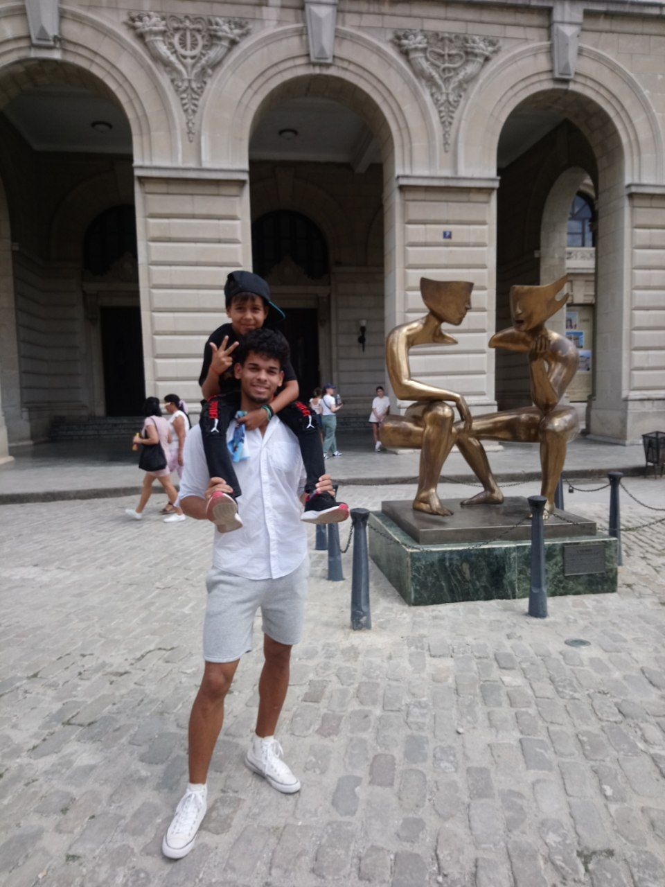

Llevo dos años de estudiante de Ingenieria Automatica con grandes aspiraciones a futuro.
Educacion
- Nivel escolar basico
- 2014-2017. Secundaria basica "René Arcay"
- Nivel escolar Medio
- 2017-2020. Pre Universitario "Martires de Humboldt 7"
- Nivel escolar Universitario
- 2022-Actualidad. Universidad "CUJAE"

Experiencia Profecional
- En la Actualidad
- En estos instantes estoy cursando la universidad por lo que no he tenido ninguna experiencia profecional relacionada
con mi carrera de ingenieria. Tengo como objetivo alcanzar un buen puesto de trabajo que guarde relacion con lo que estoy
estudiando. En un proyecto a futuro quesiera funadar mi propia empresa.
Destacados
- En la escuela
- Tuve varias poarticipaciones en distintos concursos escolares. En el que mas me pude
destacar fue en la asignatura de fisica donde llegue a participar en el Concurso Nacional de dicha asignatura. Esto
fue en el Pre Universitario.
- En solitario
- Me apaciona muchpo el mundo de la electronica, por lo cual como hobby realizo distintos
proyectos relacionados con este mundo, permitiendome cada vez aumentar mi desarrollo personal. Espesificamente me gusta
reparar los equipos especialmente las computadoras.
Pasión
- Mi pasion mas grande es el futbol en el cual me desempeño de forma regular
- Me gusta mucho jugar videojuegos en los cuales tengo un desempeño realmente bueno